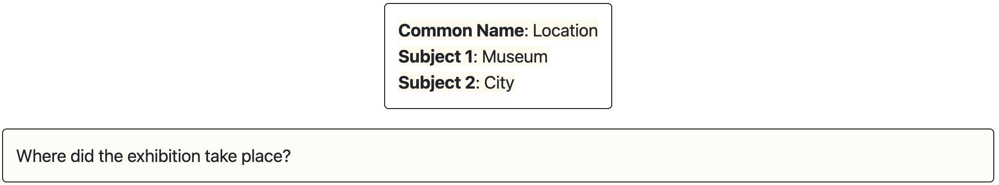
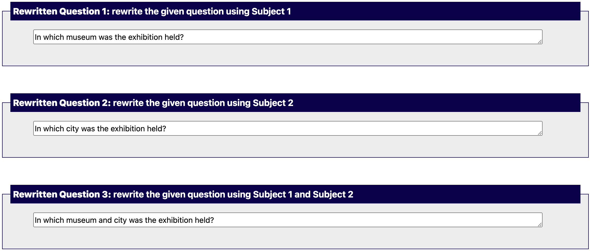
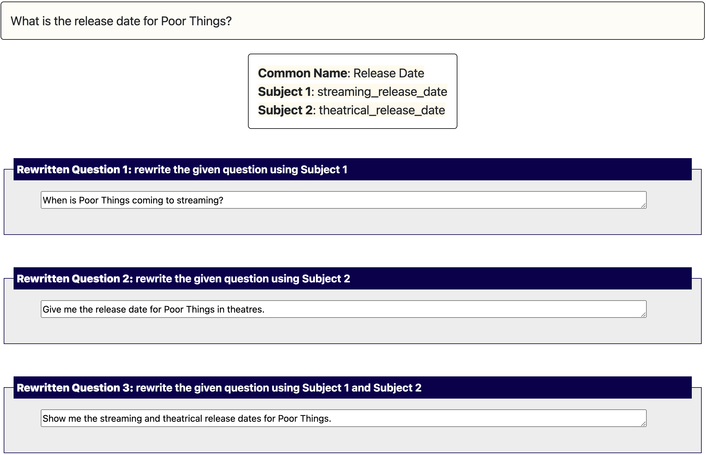

You will be given a database and a question or command related to that database. That question is vague, i.e., it may be interpreted in different ways. To clarify the question, you will receive two items related to the topic of the question. Your task is to provide three different interpretations of the question using these items.
Examples
Let's consider the following task (database not shown for simplicity):

Vagueness: The question is vague as "where" could refer to the museum (Subject 1) or the city (Subject 2) or both. You will also see a Common Name (Location in this example), but it may not be mentioned directly in the question.
Example of a completed task:

Rewriting rules
- All unformatted words must be replaced with plain words;
- You can rephrase the question, but keep the original meaning (check the database if necessary);
- You can use either question or command format.
- Rewritten questions should be unambiguous, that is, have one clear reading.
Example with unformatted Subject 1 and Subject 2 and paraphrased answers (database not shown for simplicity):
